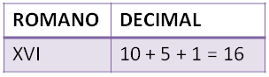
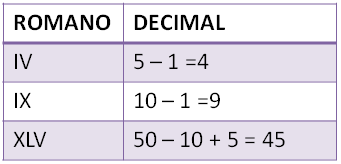
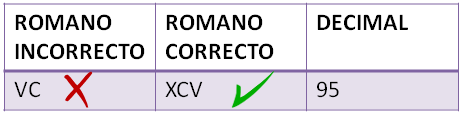
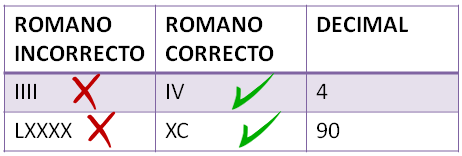
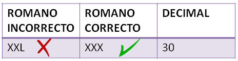

¿Sabías que nuestros números vienen del sistema de numeración árabe, que a su vez lo tomaron de India?¿Sabías que existen otros sistemas de numeración distintos?
Antes de que los árabes trajesen su sistema de numeración a Europa (y de Europa a América y el resto del mundo), hace mucho tiempo, en la Antigua Roma, los romanos inventaron un sistema de numeración que todavía seguimos utilizando para algunas cosas. Son lo que llamamos números romanos.
Para representar números romanos, debemos utilizar estas letras, combinándolas y ordenándolas. Hay que seguir algunas normas:
Los símbolos se escriben y leen de izquierda a derecha, de mayor a menor valor.

Cuando se coloca un símbolo de valor menor a la izquierda de otro, se resta.

Los símbolos 5 y sus múltiplos (V, L, D) siempre suman y no pueden estar a la izquierda de uno de mayor valor.

Se permiten como mucho tres repeticiones consecutivas del mismo símbolo.

Un símbolo que aparece restando solo se puede repetir cuando su repetición esté colocada a más de un símbolo de distancia a su derecha.

Solo se puede restar un símbolo de tipo 1 (I, X, C, M) sobre el inmediato mayor de tipo 1 o de tipo 5 (V, L, D).
-El símbolo I solo puede restar a V y a X.
-X solo puede restar a L y a C.
-El símbolo C solo puede restar a D y a M.
Después de todas las explicaciones de más arriba, te habrás dado cuenta de que para usar correctamente los números romanos es muy importante saber sumar y restar bien, ¡usamos todo el rato estas dos operaciones cuando escribimos un número romano!